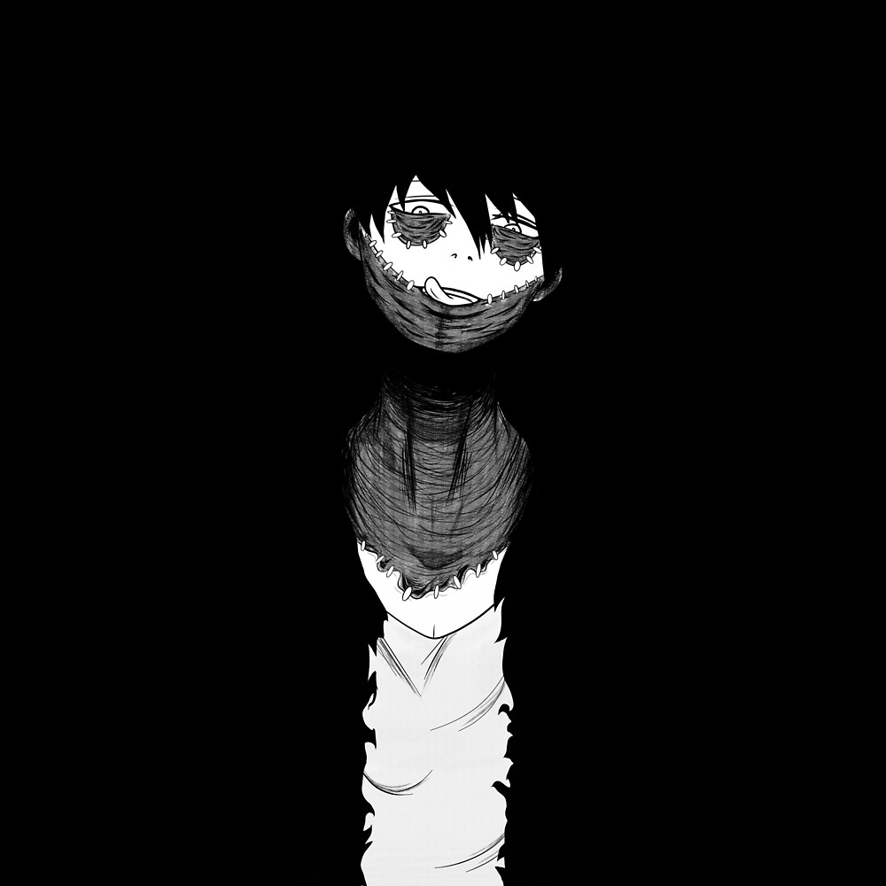

Una rosa en el florero, otra rosa en el cuadro y otra más todavía en mi pensamiento. ¿Cómo hacer un ramo con esas tres rosas? ¿o cómo hacer una sola rosa con las tres? una rosa en la vida. Otra rosa en la muerte. Y otra más todavía.
No son más silenciosos los espejos
ni más furtiva el alba aventurera;
eres, bajo la luna, esa pantera
que nos es dado divisar de lejos.
Por obra indescifrable de un decreto
divino, te buscamos vanamente;
más remoto que el Ganges y el poniente,
tuya es la soledad, tuyo el secreto.
Tu lomo condesciende a la morosa
caricia de mi mano. Has admitido,
desde esa eternidad que ya es olvido,
el amor de la mano recelosa.
En otro tiempo estás. Eres el dueño
de un ámbito cerrado como un sueño.
Querido manso mío, que venistes por sal mil veces junto aquella roca, y en mi grosera mano vuestra boca y vuestra lengua de clavel pusistes, ¿por qué montañas ásperas subistes que tal selvatiquez el alma os toca? ¿Qué furia os hizo condición tan loca que la memoria y la razón perdistes? Paced la anacardina, porque os vuelva de ese cruel y interesable sueño, y no bebáis del agua del olvido. Aquí está vuestra vega, monte y selva; yo soy vuestro pastor, y vos mi dueño; vos mi ganado, y yo vuestro perdido.
Si das un paso más te quedas sola... En el umbral de un tiempo que no es el tuyo aún y no es ya el mío. Sobre el primer peldaño de una escalera rápida que nadie podrá jamás decir si baja o sube. En el principio de una primavera que, para tu patético hemisferio, nunca resultará sino el reverso casto de un otoño... Porque la frágil hora en que tu pie se apoya es un espejo, si das un paso más te quedas sola.

Si quiere escuchar musica para leer pulse en el boton